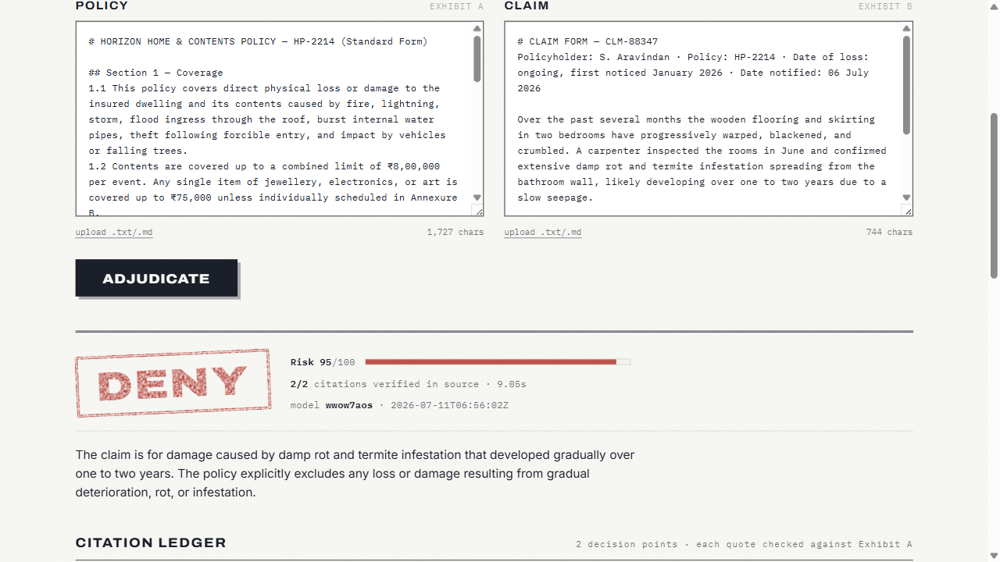

Every decision, cited. Auditable AI claims adjudication — every conclusion grounded in a verbatim policy clause, machine-verified before it is shown.
clause-4vv4.onrender.com · github.com/Dhevenddra/Clause

Trust is enforced by code, not promised by prompt.
Gemma must quote the policy character-for-character for every decision point. One structured call — no chains, no agents.
validation.py: normalized exact-substring match against the source, mapped back to a character span. No fuzzy matching, no embeddings — a quote either exists or it doesn't.
Pass → ✓ verified + clause highlight.
Fail → ✗ rejected in the open, excluded from the decision basis. Never silently dropped.
clause-4vv4.onrender.com
github.com/Dhevenddra/Clause